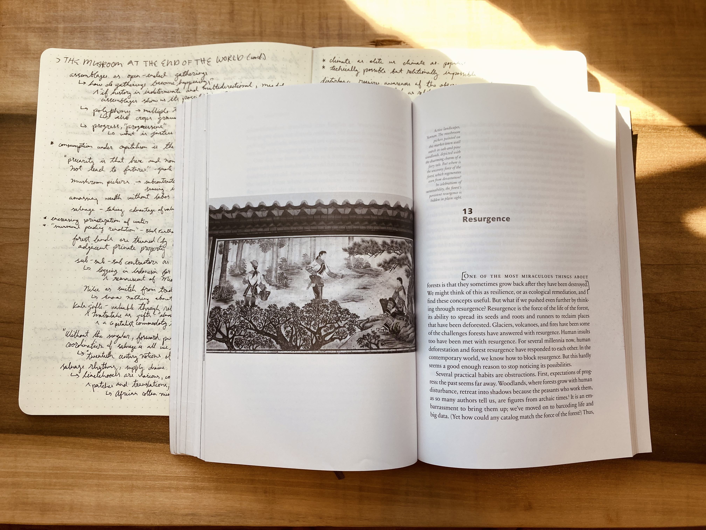

Anna Lowenhaupt Tsing
The Mushroom at the End of the World

this book is very much about mushrooms, but also simultaneously about humanity, futures, histories, capitalism, supply chains, forest ecology, ways of knowing, and more. she writes about the experience of precarity and indeterminacy and how they will shape our futures, and how myths of progress and modernization have shaped our past and present. she finds ways of moving past the dominant narrative forces of hope and doom: "neither tales of progress nor ruin tell us how to think about collaborative survival." she moves past "twentieth century notions of scalability and expansion as progress" which I am starting to see everywhere now that I have this frame.
the world cannot be "saved", kept as it is - we must learn to live in the worlds to come. "without the singular, forward pulse of progress, the unregularized coordination of salvage is all we have." her ideas remind me of and extend thoughts from Shock Doctrine, Parable of the Sower, and Emergent Strategy, I think there’s some clustering of ideas here.
